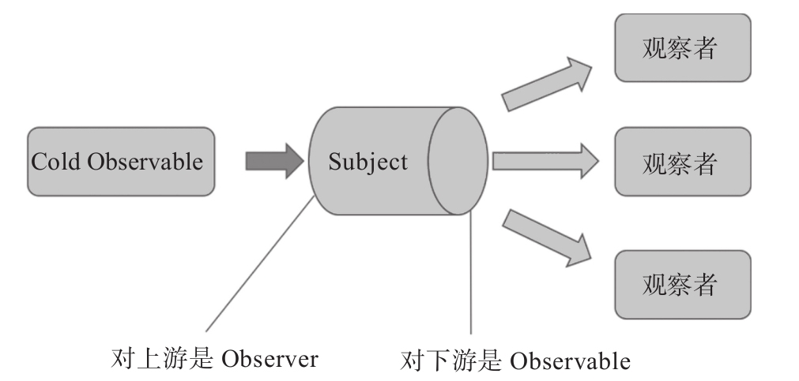

现在考虑用Subject实现多播，既然Subject既有Observable又有Observer的特性，那么，想象一下，让一个Subject对象成为一个Cold Observable对象的下游，其他想要Hot数据源的Observer就不要去订阅那个Cold Observable对象了，而是去订阅这个Subject对象。
我们知道，Hot Observable可以认为是“生产者”独立于订阅行为之外的Observable，现在，以Subject为中心，Subject就是这个Hot Observable，它所订阅的Cold Observable对象就是那个“生产者”。
Subject同时也是一个Observer，作为Observer会接受和消化“生产者”推过来的数据，最简单的消化方法，就是把数据、错误和完结通知都一股脑原样推给Subject自己的Observer。

图10-3 Subject和上下游的关系
如此一来，就实现了多播。
在代码清单10-1中，我们看到了Cold Observable不能实现多播，可以通过使用Subject来改进这段代码，如下所示：
import {Observable} from 'rxjs/Observable';
import {Subject} from 'rxjs/Subject';
import 'rxjs/add/observable/interval';
import 'rxjs/add/operator/take';
const tick$ = Observable.interval(1000).take(3);
const subject = new Subject();
tick$.subscribe(subject);
subject.subscribe(value => console.log('observer 1: ' + value));
setTimeout(() => {
subject.subscribe(value => console.log('observer 2: ' + value));
}, 1500);
需要的改变其实相当少，只要让一个Subject对象居于Cold Observable和Observer之间。
Subject对象subscribe了由interval产生的Cold Observable对象tick$，然后其他Observer都来subscribe这个Subject对象就好了。
就这么简单。
Subject本身可以用来实现很多功能，不过在RxJS中，它被设计出来，主要就是为了解决多播的问题，在后面的章节可以体会到，多播其实就是以Subject为核心来实现的。